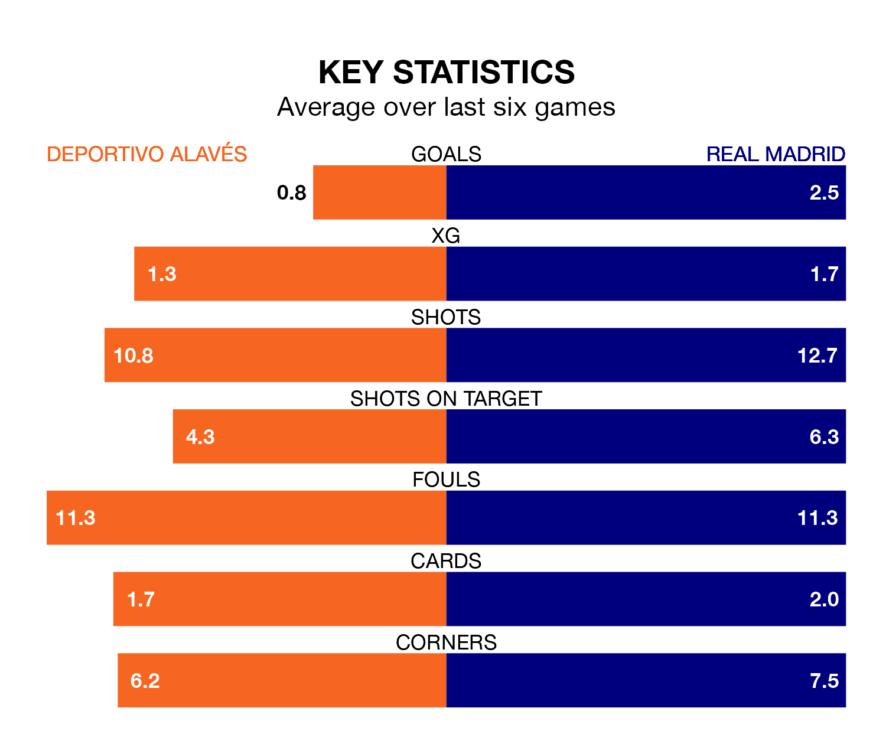

Real Madrid are strong favourites to take all three points despite Deportivo Alavés's home advantage in Thursday's late match at Estadio de Mendizorroza.
*Betting Company* are offering odds of 1.74 on Madrid sealing the win, with the visitors sitting second in La Liga table.
Alavés, who are 13th in the league and 26 points behind Real Madrid, are priced at 4.62 to win. A draw is set at 3.84.
With 38 goals in 17 games so far this season, Madrid are the league's second-highest scorers with 2.2 goals per game. And they are conceding fewer than average, letting in 11 goals at a rate of 0.6 per game.
Alavés, meanwhile, are below average scorers, with 0.8 goals per game, compared to a league average of 1.3. They have conceded 1.4 goals per game.
In Jude Bellingham, Real Madrid have the league's sharpest shooter so far this season. He has notched 13 goals in 15 appearances.
His goal rate of one every 99 minutes is much quicker than that of Kike García, Depor's top scorer with a goal every 363 minutes, and a total of two goals in 17 games.
Deportivo Alavés are in mixed form in La Liga, with two wins and a draw from their last six games.
With four wins and two draws over that period, the visitors' form is much better – they have taken 14 points from 18, compared to the home side's seven.
In the last five years, Alavés and Madrid have played each other on seven occasions. Alavés won one of them and Madrid the other.
On average, Deportivo Alavés scored 0.7 goals and Real Madrid 2.7 in those matches.
Their last meeting was on February 19 2022, when Madrid won 3-0 at home.
Alavés's last match was on Monday, a 3-0 loss against Girona.
Madrid beat Villarreal 4-1 last time out, on Sunday, with Bellingham, Brahim Diaz, Luka Modrić and Rodrygo on the scoresheet.
Thursday's match will be refereed by Isidro Díaz de Mera Escuderos, who has taken charge of nine La Liga games so far this season, issuing two red cards and booking 53 players. He has awarded two penalties.
The last Alavés game Díaz de Mera Escuderos refereed was a 1-0 away loss to Cádiz on August 14. His last Madrid match was their 1-0 win away at Celta de Vigo on August 25.
